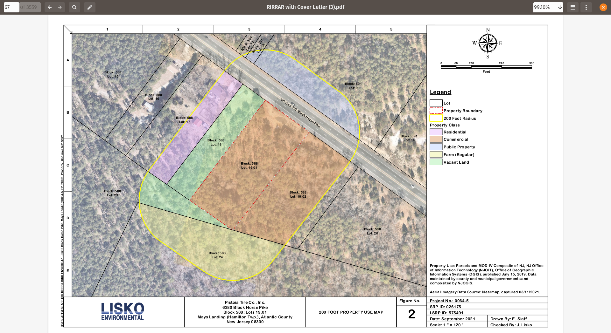
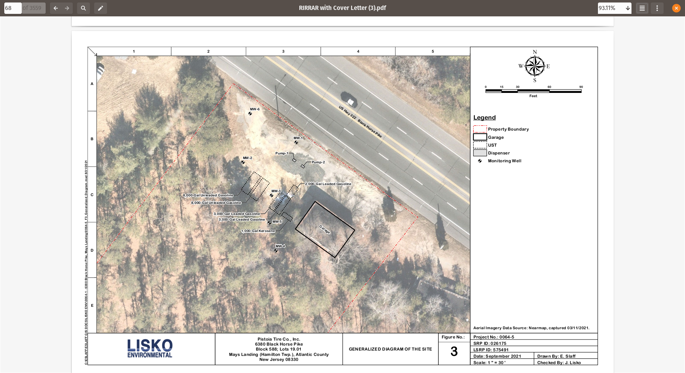

DeeAar Holdings, LLC
A real-estate hedge fund with sustainability in mind.
Copyright: DeeAar Holdings LLC, 2022. All rights reserved.
Who We Are
- We are a real-estate fund focusing on deriving value from environmentally challenged sites.
Environmentally Challenged Site
- Sites that are strategically located and most likely on their way to becoming brownfields, such as,
- Abandoned gas stations
- Drycleaners sites in shopping malls
- Automotive centers, etc.
Our track record
- Cleanup of an abandoned gas station in Mays Landing, NJ
- Site in York, PA
- A mini-shopping mall in York,PA.
Cleanup of an abandoned gas station - Mays Landing, NJ
- The site was formerly utilized as an automotive service with
- Gasoline
- and Kerosene fuel pumps.
- The rest of the slides in this section (Mays Landing, NJ) present the project in some greater detail
Mays Landing, NJ (contd.)
- Areas of concern
- Unleaded gasoline underground storage tank (UST)
- 2 X 8000 gallons tank - Tank-1, Tank-2
- Leaded gasoline UST
- 2 X 3000 gallon Tank-3 and Tank-6
- 2000 gallon Tank-4
- Unleaded gasoline underground storage tank (UST)
Mays Landing, NJ (contd.)
- Areas of concern
- Kerosene UST
- 1000 gallon - Tank-5
- 2 dispensers and appertenance piping
- Kerosene UST
Mays Landing, NJ (contd.)

Mays Landing, NJ (contd.)

Mays Landing, NJ - (contd.) - AOCs
 Areas of Concern
Timeline - Mays Landing, NJ (contd.)
- Site was operational last in 1989 and vacated since then.
- Tanks were removed on August 3rd, 2018.
- An in situ remedial strategy for groundwater was proposed in Mar 2020.
Results in Monitoring Wells (MW) - Mays Landing, NJ (contd.)

Notes on the rate of bioremediation at site - Mays Landing, NJ (contd.)
- Location: MW-3
- Date 3/13/2020: 130
- Date 4/27/2020: 29.9
- Duration: 45 days
- 50 % decay: 20 days
Conclusions - Mays Landing,NJ (contd.)
- HydroRemed was successful in cleaning up the site under 6 months.
- The project was completed within 3 years and under budget.
- The site is not listed as a priority by the NJDEP.
- A blog post on the project unrestricted use. Link
- Response Action Outcome (RAO) for unrestricted use. Link
- The Remedial Investigation Remedial Action Report. Link
Summary
Our portfolio consists of properties that were on the priorities list of the local environmental agencies which have later been removed from that list as a result of the successful cleanup. We believe that this cleanup is needed for sustainability.